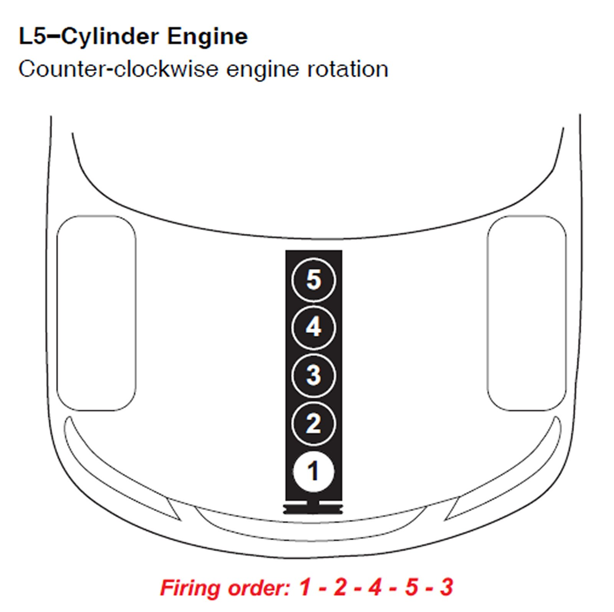
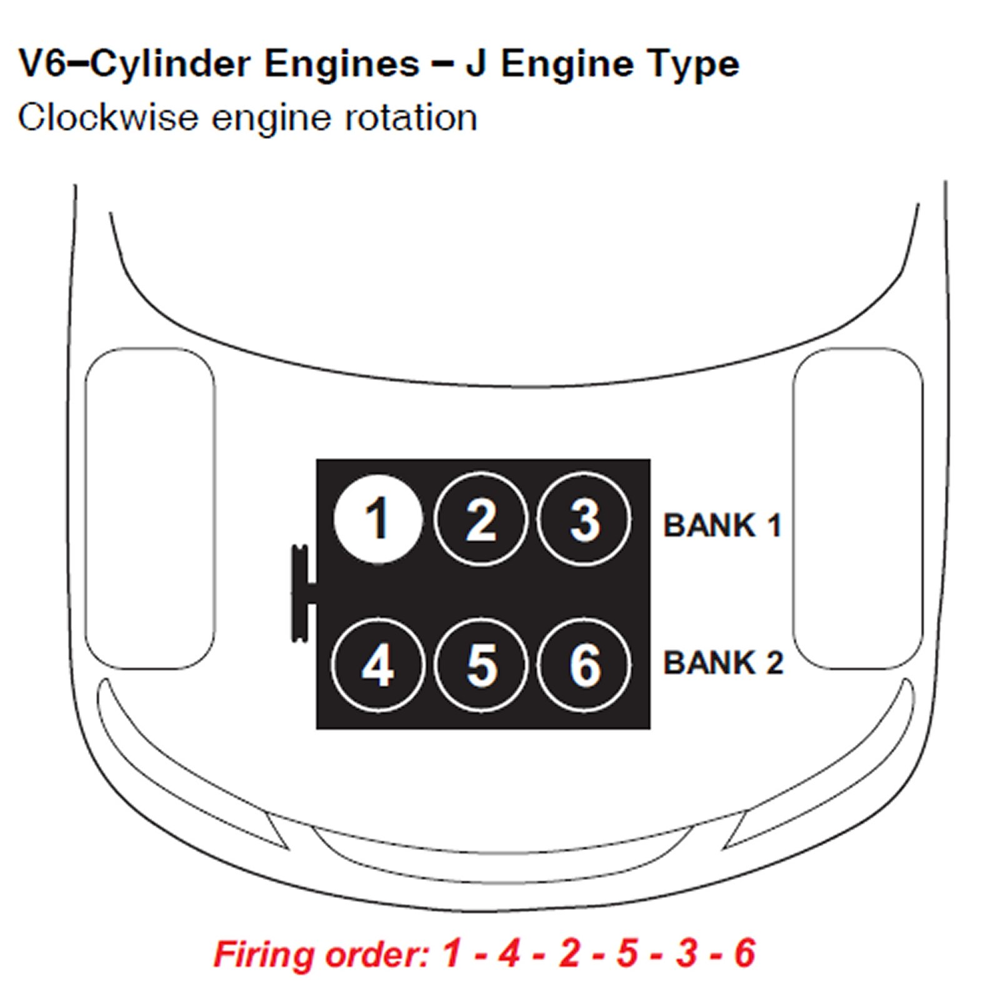

Firing Order: Specifications
*Hint - See Vehicle Emissions Label for Engine Type
B Engine Type:

K Engine Type:

L5 Engine:

C Engine Type Horizontally Opposed:

C Engine Type Rear Wheel Drive:

C Engine Type Midship:

J Engine Type:

X Engine Type: